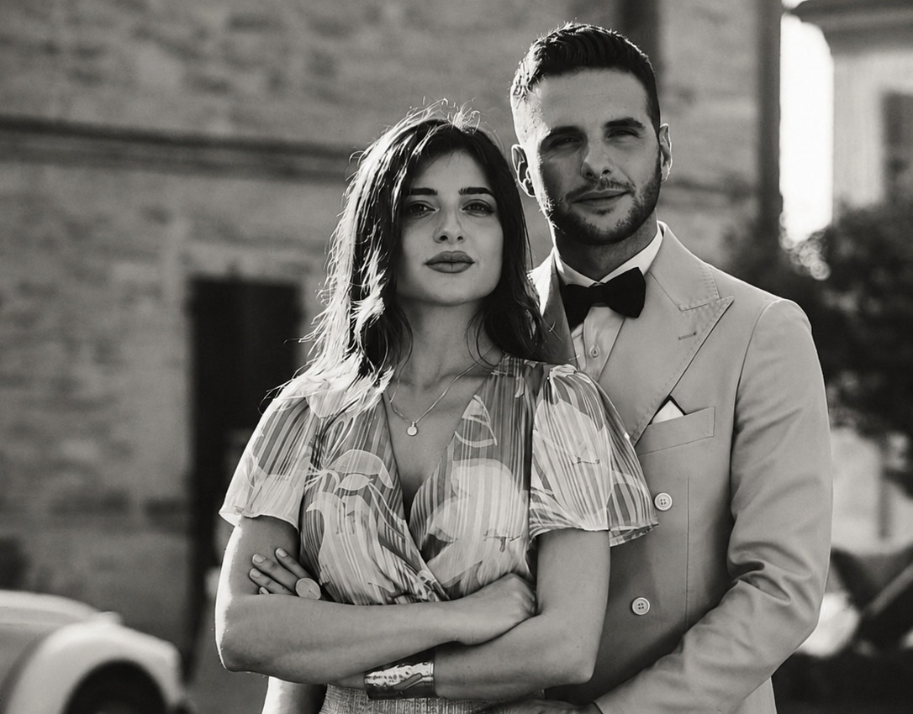

I
Le nostre radici
Tutto comincia a Paese. È qui che siamo cresciuti, qui che ci siamo incontrati, qui che le nostre famiglie hanno intrecciato le loro storie. Ci sono luoghi che si attraversano e luoghi che si abitano dentro. Da qui partono le nostre radici, e a qui, ogni volta, fanno ritorno.